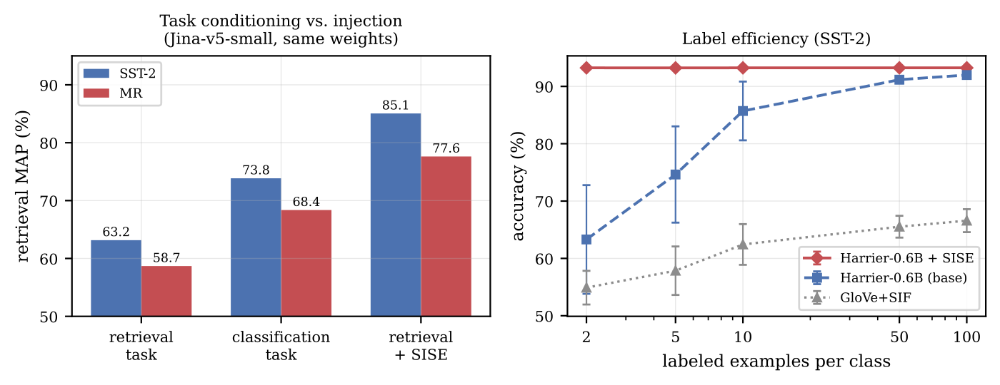

用向量检索去找“用户不喜欢这个产品哪里”，召回的评论往往话题都对，好评差评却混在一起。这篇论文把原因量清楚了：从 2021 年的 MiniLM 到 2026 年的新模型，11 个文本向量模型里都藏着情感信息，用一个简单的线性分类器就能读出来，准确率最高 91.3%；但检索真正用的余弦相似度几乎不看情感，同极性句子对和反极性句子对的平均相似度只差 0.003 到 0.064。作者在冻结的向量模型上加一个不到 70 万参数的小投影头，用 CPU 训练几秒就能修好：情感检索的 MAP（平均精度均值，越高说明同极性的结果越排在前面）最多提高 26 个点，代价是通用语义相似度会掉，拼接原向量后损失降到 2.4 到 12 个点。
我的判断：做评论检索、客服工单检索、舆情分析，或者 RAG 里需要按态度召回内容的团队值得读。结论很实用：向量模型排行榜分数高，不代表它的相似度能区分你关心的属性，而且换更大的模型也解决不了。修复方法便宜，不用重新编码语料。但实验只用了两个英文电影评论数据集，修复头需要几千条标注，也没和更简单的线性投影比较。
它到底在解决什么问题？
检索、聚类、去重、推荐和 RAG，本质上都是在向量空间里找最近邻。真正起作用的不是“向量里有没有某种信息”，而是“相似度会不会因为这种信息而变化”。
对话题和语义来说，这两件事通常一致。但作者发现情感是个例外。他们用两个指标分开测这两件事：
- 线性探针准确率：在冻结的向量上训练一个逻辑回归分类器判断句子是正面还是负面。准确率高，说明情感信息在向量里，而且能被线性读出。
- 属性对齐差（AAG，作者提出的指标）：同极性句子对的平均余弦相似度，减去反极性句子对的平均余弦相似度。接近 0 说明相似度对情感是“瞎”的。
AAG 只需要类别标签，不需要人工打相似度分，几行代码就能算，可以用在任何属性和任何向量模型上。
关键发现：信息在，但相似度不用它
作者测了 11 个冻结的向量模型，参数量从约 2200 万到 40 亿，包括 E5、BGE、mxbai、Snowflake Arctic、Qwen3-Embedding 0.6B 和 4B、微软 Harrier、Jina-v5。数据是两个英文情感数据集：SST-2（电影评论句子）和 MR（烂番茄影评）。
结果在所有模型上一致：探针准确率在 SST-2 上从 MiniLM 的 77.4% 涨到 Qwen3-4B 的 91.3%，五年里进步明显；AAG 却一直贴近 0，在 0.003 到 0.064 之间，没有随年份或模型大小上升。情感检索的 MAP 跟着 AAG 走，而不是跟着探针准确率走。
最典型的是 Qwen3-Embedding-4B：探针准确率是所有模型里最高的，检索 MAP 却只有 64.3，说明模型更大让语义更好，却没让相似度更关注情感。

为什么会这样
作者给了一个定量解释：情感方向在向量里占的比重太小。他们取正面句子平均向量和负面句子平均向量之差的方向，算出整个向量空间的方差里有多少落在这个方向上。在 SST-2 上，MiniLM 是 2.4%，Qwen3-4B 是 4.3%，E5-large 是 6.7%。余弦相似度是对所有维度求和，一个只占 4% 方差的方向几乎影响不了它。而且 4B 模型的比例反而比 0.6B 的 Harrier 低，所以模型变大不会自动改善。
至于为什么比重这么小，作者认为原因在预训练目标。对比学习用的正样本对大多是话题相关的，比如问题和文档、标题和正文。“这部电影太棒了”和“这部电影太烂了”句式、话题、实体完全相同，只差一个评价词，在这种目标下几乎是完美的正样本对，所以训练会主动压缩情感方向。
作者用 Jina-v5 做了一个对照。这个模型编码时要求调用方指定任务类型，比如“检索”或“分类”，同一套权重会按指定的任务输出不同的向量。于是可以在不换模型的情况下检验：让它按分类任务编码，能不能自己把情感补回来。切到分类模式后，SST-2 上的情感检索 MAP 从 63.2 升到 73.8；但在检索模式上加修复头能到 85.1。也就是说，换模式只拿回了修复头一半左右的提升，而 AAG 几乎没变（0.039 到 0.043）。这说明问题不只是“用错了模式”。

情感也不是唯一的例子。作者在另外 8 个属性上测了 3 个模型，包括新闻话题、主观性、情绪、反讽和立场。探针都能读出这些属性，比如话题比多数类基线高 62.9 个点，但 AAG 最高只有 0.08，大多低于 0.05；修复后的情感空间则在 0.4 到 0.5。连对比学习本来就该学好的“话题”，AAG 也只有 0.02 到 0.08，说明这是向量模型的普遍现象。
修复方法：一个小投影头
作者把方法叫 SISE（情感注入句向量）。做法很简单：向量模型完全冻结，先把训练集都编码好，然后在向量上接一个两层小网络（隐藏层 256 维，输出 128 维），用有监督对比学习训练：同一情感标签的句子互为正样本，拉近；不同标签的推远。参数量随原向量维度在 13 万到 69 万之间，在 2 核 CPU 上每个头只需几秒，训练集是 4000 条标注句子。
作者强调这不是“添加”信息，而是“修复”相似度。因为探针已经证明情感在向量里，小网络做的是丢掉那些主导余弦相似度、却和情感无关的方向，并把情感方向放大，直到它决定谁和谁更近。修复后情感方向占的方差比例从个位数升到 85.5% 到 96.7%。
实验结果
| 向量模型 | 原始探针准确率 | 原始 MAP | 加修复头后 MAP | AAG 变化 |
|---|---|---|---|---|
| E5-large | 89.7 | 72.2 | 90.1 | 0.023 到 0.409 |
| Arctic-large | 82.2 | 54.4 | 79.6 | 0.005 到 0.264 |
| Qwen3-4B | 91.3 | 64.3 | 90.3 | 0.029 到 0.393 |
| Harrier-0.6B | 90.8 | 73.6 | 91.8 | 0.034 到 0.512 |
上表是 SST-2 上的结果。修复头让 AAG 提高 7 到 61 倍，情感检索 MAP 提高 9.8 到 26.0 个点；2022 年以后的模型全量数据探针准确率也提高 1.4 到 5.8 个点，只有 2021 年的 MiniLM 略降。5 个随机种子的标准差在 SST-2 上不超过 1 个点，说明结果稳定，对输出维度和温度参数也不敏感。
一个对部署有用的结论：加上同样的修复头后，0.6B 的 Harrier 到了 91.8 MAP，4B 的 Qwen3 是 90.3，所以在情感检索上模型大小远不如相似度本身重要。而且修复头输出只有 128 维，比 Qwen3-4B 的 2560 维小 20 倍，不需要重新编码语料，只在已有向量上多算一步。
代价也量清楚了。在通用语义相似度基准 STS-B 上（指标是模型相似度和人工相似度打分的排序相关系数，乘 100 后在 0 到 100 之间），原始向量在 82 到 88 之间，128 维的修复头输出只有 42 到 47，低了 38 到 41 个点，因为它只学了情感，别的结构都丢了。把原向量和修复头输出拼接起来，损失降到 2.4 到 12 个点。所以单独的修复头只适合做情感专用索引，要一个索引兼顾两者就用拼接版本。
我认为的局限
第一，数据范围窄。修复实验只在两个英文二分类电影评论数据集上做，每个只用 4000 条训练数据；8B 到 12B 的大型向量模型没测。
第二，缺少更简单的基线。作者自己承认没有和线性判别分析、沿探针方向缩放这类线性做法比较，也没和 SentiCSE（专门训练的情感句向量模型）或者给向量模型加情感指令比较。这些基线可能已经能拿到大部分收益。
第三，少样本结果要小心看。图 2 右边“每类 2 个标注就到顶”的前提是修复头本身用了 4000 条标注训练，并不是真正的少样本学习。
第四，AAG 是绝对的余弦差值，不同模型的相似度分布不同，所以跨模型比较 AAG 大小并不严格，要和检索 MAP 一起看。
一个团队可以怎么试
- 先诊断：在你的业务数据上，按你关心的属性（情感、紧急程度、投诉与否）给几百条样本打标签，算 AAG 和探针准确率。如果探针高而 AAG 接近 0，说明你遇到了同样的问题。
- 再修复：用几千条标注训练一个小投影头，代码公开，CPU 上就能跑。
- 部署时决定是建一个专用的 128 维索引，还是把输出拼到原向量后面，后者对通用检索影响更小。
- 上线前先和“沿探针方向放大”这种线性做法对比，确认非线性头确实有必要。
一句话结论
向量模型里有情感信息，但余弦相似度几乎不用它，换更大的模型也没用；先用 AAG 量一下，再用一个几秒钟训练好的小投影头修复，就能让检索按态度区分结果。
| 维度 | 评价 |
|---|---|
| 问题重要性 | 高。评论、工单、舆情检索都依赖相似度区分态度 |
| 方法创新性 | 中。诊断指标和归因分析清晰，修复头本身是标准的有监督对比学习 |
| 实验证据 | 中。11 个模型、9 个属性，但修复只在两个英文数据集上做，缺简单线性基线 |
| 工程成本 | 很低。CPU 几秒训练，不用重新编码语料，代码公开 |
| 是否值得尝试 | 有按属性检索需求的团队值得先算一次 AAG |